April 4–10, 2026 • Seattle → Olympic Peninsula → Cannon Beach → Portland
"The Olympic Peninsula is the most beautiful place I have ever been."
— Bella Swan, Twilight
This trip was designed for you. Twilight vibes, ancient forests dripping with moss, wild beaches with sea stacks rising from the mist, and the kind of nature photos your friends have never seen. Every day has a "wow" moment. Bring your camera and your sense of wonder.
"I just walked through Bella's world."
Early morning flight from Fort Lauderdale to Seattle on Alaska Airlines flight 355. Land, grab your Hertz rental car at SEA-TAC, and hit the road — the adventure starts immediately.
The drive from Seattle to Forks takes you through deep forests and past Lake Crescent — a glacier-carved, impossibly turquoise lake inside Olympic National Park. Stop. Get out. Take photos. It's unreal.
You arrive in Forks — population 3,446, the rainiest town in the lower 48, and the town Stephenie Meyer chose as Bella Swan's new home.
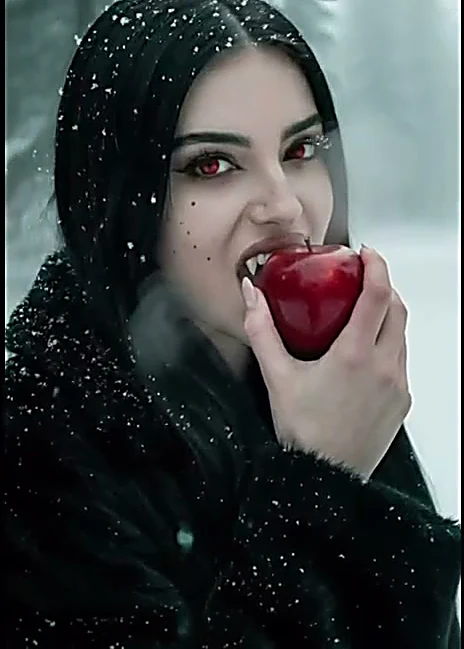
A cozy 2-bedroom, 2-bath house on a large private lot with three covered porches, a fire pit, full kitchen, and a living room with misty forest vibes. Deer, elk, and bald eagles right outside your door. Three minutes from town, perfectly positioned between the beaches and Hoh Rainforest.
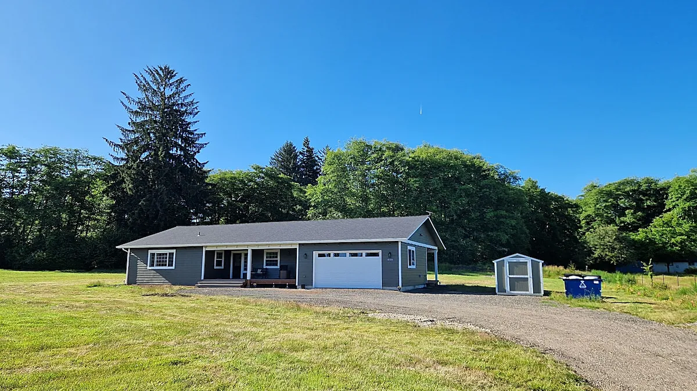
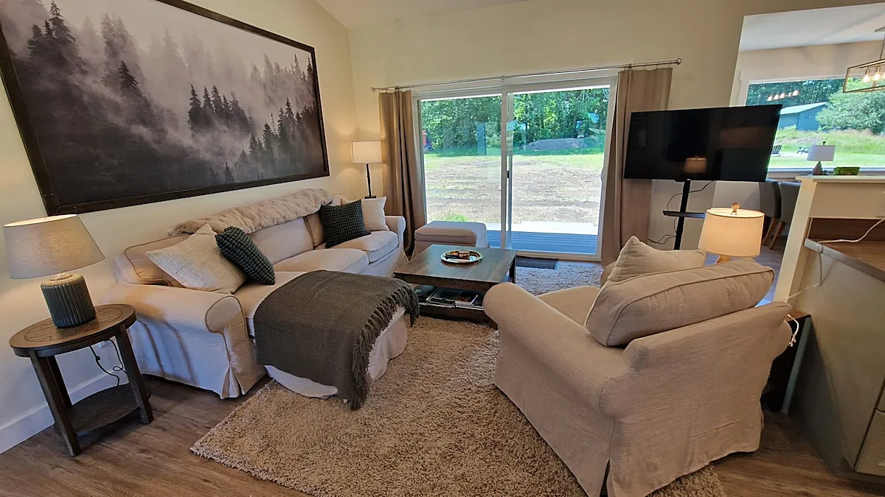
"This is the most beautiful place I've ever been."
A 1.2-mile loop through the most magical forest on Earth. Western hemlocks and bigleaf maples draped in every shade of green you can imagine — hanging mosses, ferns carpeting the floor, trees reaching 250 feet into the sky. It feels like walking into another world.
The light filters through the canopy like something from a fairy tale. This trail is easy enough for anyone but stunning enough to leave you speechless.
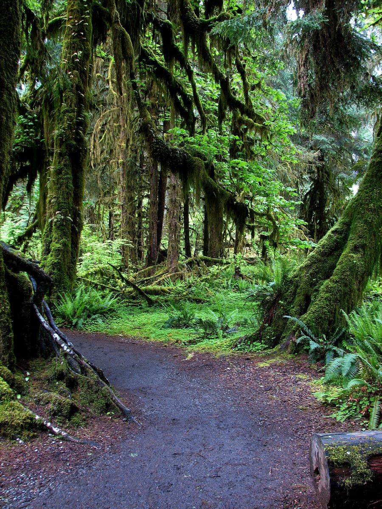
"I swear, I've never seen anything like it. The greenness and the size of the plants are beyond anything on the east coast."
A 0.7-mile trail winds through dense, mossy forest and then drops you onto a wild sandy beach with massive sea stacks rising from the ocean, tidepools, a natural rock arch, and driftwood scattered everywhere.
This is where Jacob told Bella the truth about Edward on the beach. The mist, the sound of the waves, the raw Pacific coast — this is peak Twilight energy.
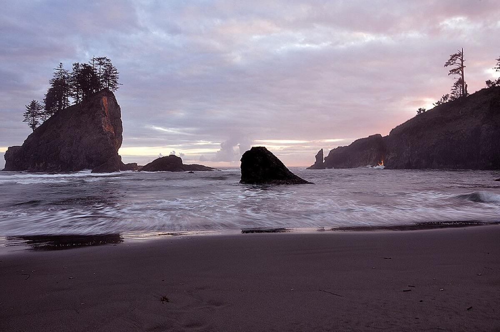
Giant driftwood logs, sea stacks disappearing into fog, and the wild North Pacific. Walk toward Hole-in-the-Wall — a sea arch carved by centuries of waves. If the light cooperates, sunset here is absolutely cinematic.
"I never want to leave this place."
A scenic 4.5–5 hour coastal drive from Forks down to Cannon Beach, Oregon. The drive itself is gorgeous — forests, small coastal towns, bridges over rivers.
You arrive at Cannon Beach in the afternoon. Walk out to the beach. And there it is:
235 feet of ancient basalt rising straight out of the sand. Surrounded by tidepools. At low tide you can walk right up to it. At sunset, it silhouettes against pink and orange sky. This is one of the most photographed landmarks on the entire Pacific Coast.
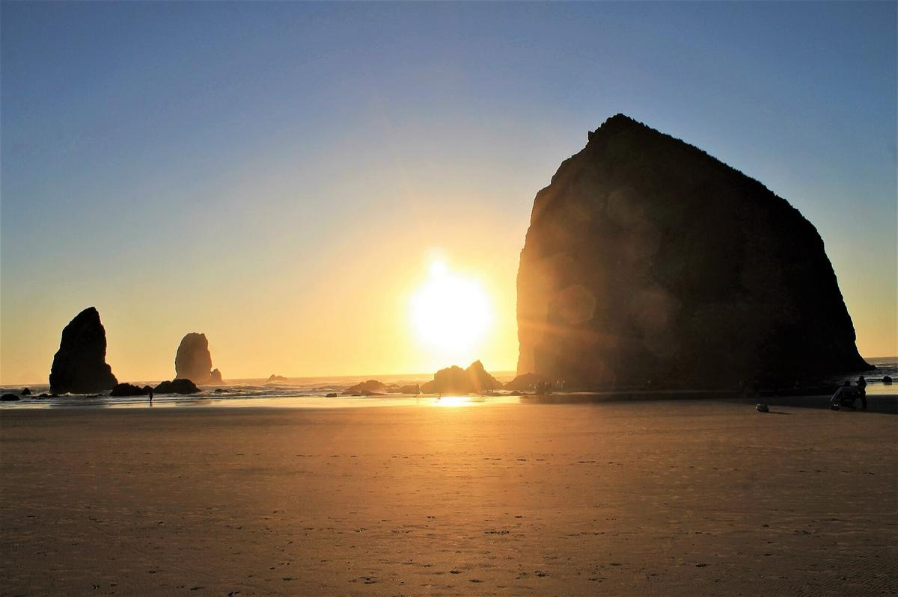
Your spot. The trail through Ecola's coastal forest with views of cliffs dropping to the Pacific. Dense coastal evergreens, moss, ocean mist. (We'll check road access conditions closer to your trip date.)
A 3-bedroom, 2-bath beach house just south of Cannon Beach in Arch Cape — walk right down to the beach with sea stacks and rock formations. Set back from other homes for peace and quiet, steps from Oswald West State Park and Falcon Cove. 10/10 rated on Vrbo.
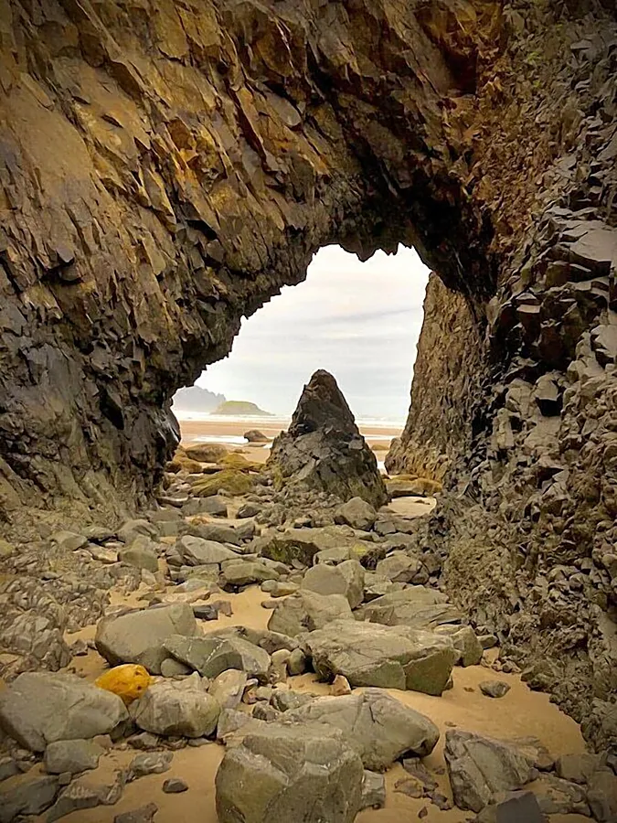
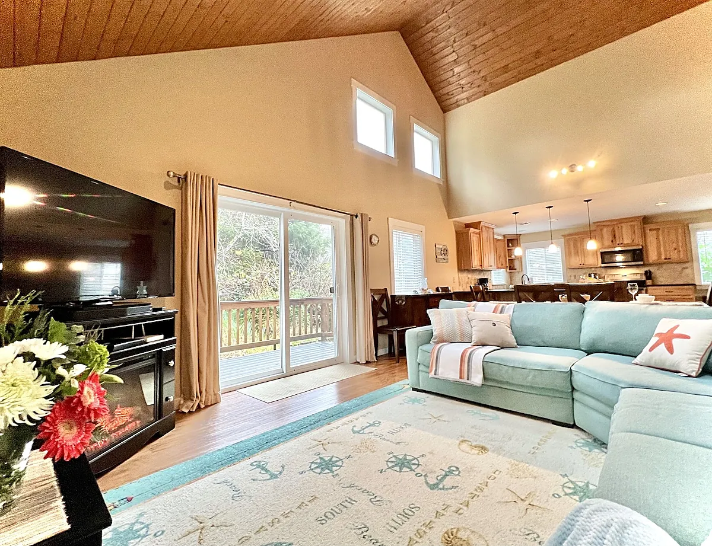
City energy meets Pacific Northwest cool.
Start the morning with one last walk on the beach. Maybe catch low tide at Haystack Rock.
Short 1.5-hour drive to Portland — Oregon's coolest city. Check in, explore the neighborhood, and ease into city mode.
Spacious family suite, separate living area, complimentary breakfast every morning, and an evening reception. Downtown location, walking distance to everything.
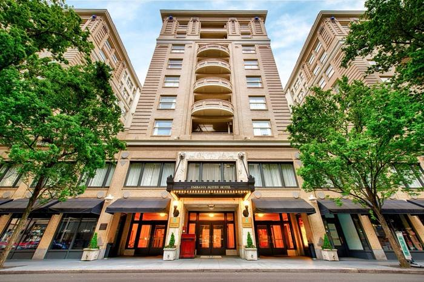
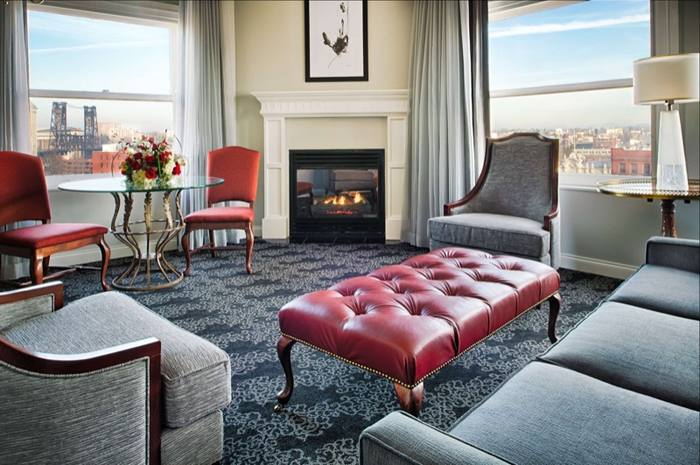
"I literally walked behind a waterfall."
A half-day trip east of Portland into the Columbia River Gorge — a dramatic river canyon with dozens of waterfalls.
Oregon's tallest waterfall. 620 feet of cascading water, fed by underground springs. In April, the flow is at its strongest — spring runoff makes the falls absolutely thundering.
No reservations needed in April (timed permits are only required May 22–Sept 7). Walk up to Benson Bridge for the classic view, or hike to the top for the full experience.
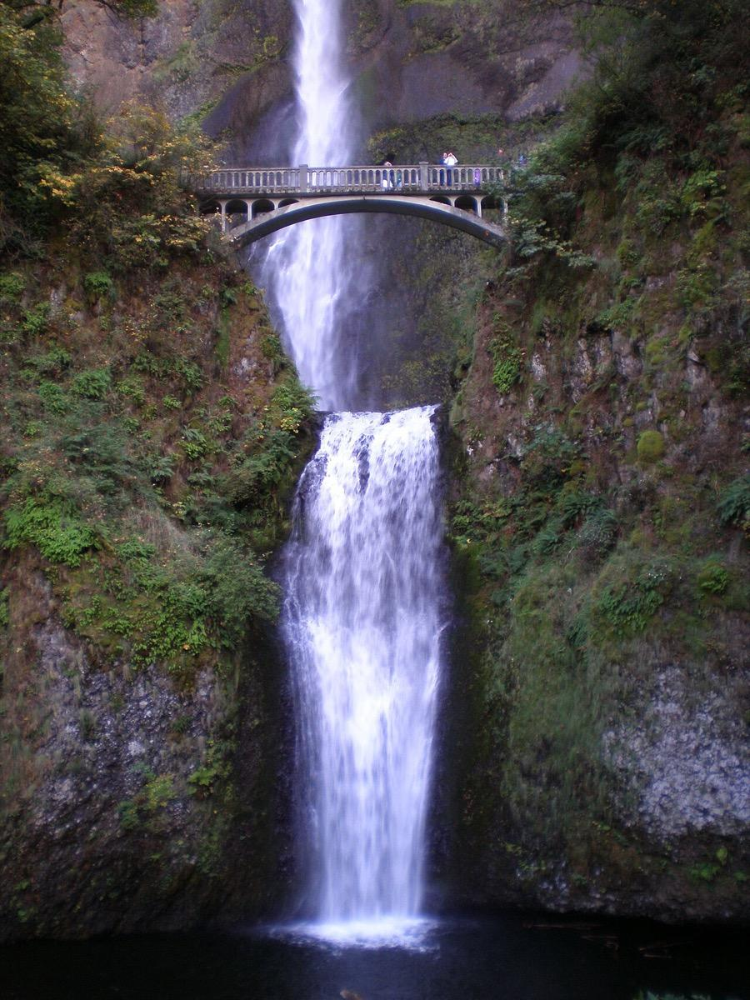
If you want more waterfalls, Silver Falls is about an hour south of Portland. The Trail of Ten Falls is an 8-mile loop past ten waterfalls — and you walk behind four of them.
In April, the forest is neon-green with new spring growth, and the falls are roaring. This is bucket-list-level hiking.
Relaxed, golden. "I don't want to go home."
Portland has a 5,200-acre urban forest — one of the largest in any US city. The trails feel like a quieter version of the Hoh Rainforest. Mossy trees, fern-lined paths, dappled light. Perfect for one more round of magical forest photos.
A special dinner to cap off an incredible week.
Morning flight from Portland (PDX) back to Florida. Sleep on the plane. Dream about mossy forests and misty beaches.
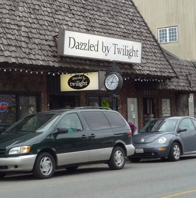
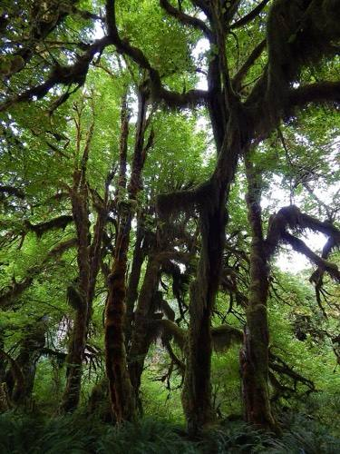
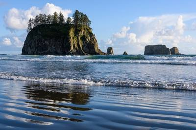
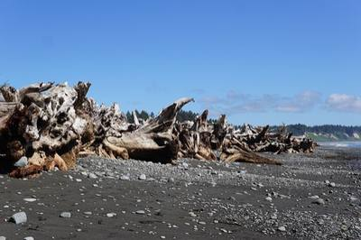
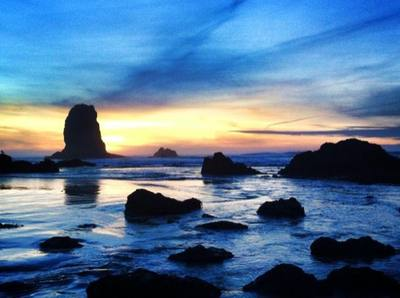
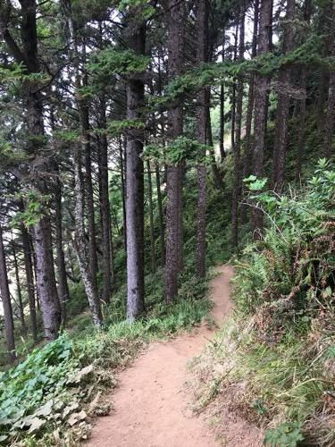
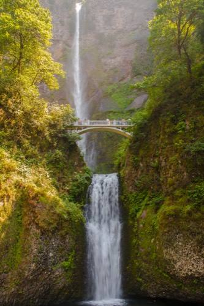
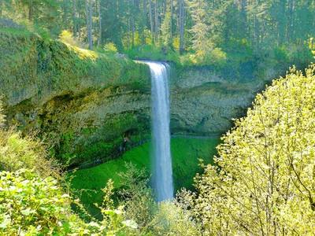
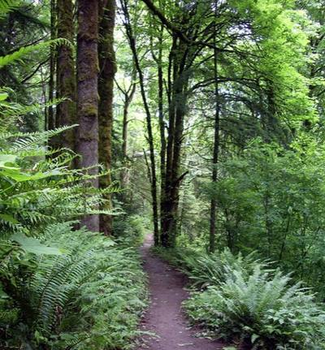
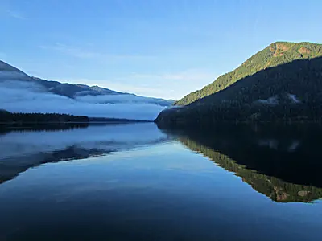